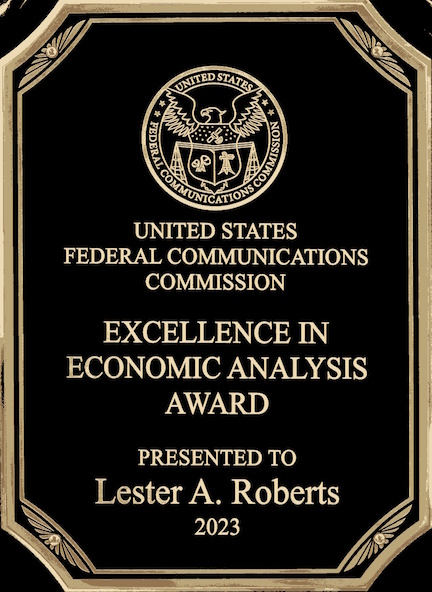
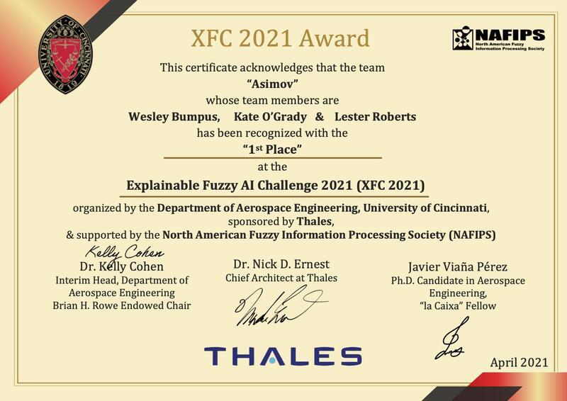
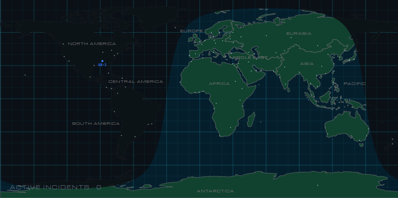

Four Swords
A wheelbug fencer.
I'm an economist with a background in data analytics and AI. Check out my art and projects!


Awarded the FCC's Excellence in Economic Analysis Award for my work making the Emergency Alert System more resilient, enhancing public safety.
View Official Document →
Won 1st Place, most innovative, most computationally efficient in the UC Fuzzy Logic Challenge.
View Announcement →I've loved sketching for a very long time, and have since branched out into digital illustration and 3D modeling. I draw a wide range of things - whatever strikes my interest. Often that's ships, lizards, sci-fi or fantasy soldiers, or portraits.
A wheelbug fencer.

A heavily armored Curawan Knight.

Portrait of Obama.

A ticonderoga cruiser, inspired by the Vaporwave aesthetic, done in Blender.

A collection of low-poly warships, done in Blender.

Low-poly UFO interception, done in Blender.

A robot on a strange world.

He has a license to krill...

Spaceship in front of Mars, done in Blender.

Sketch of a sci-fi soldier.

A Curawan expeditionary soldier.

Sketch of a space warship, superstructure inspired by the Arleigh Burke.
HTML web apps. You can find all of these in the projects folder on the website's GitHub.

Defend Earth from an Alien Invasion. LLM-driven enemy strategy, roleplay, and battle resolution. Uses RAG to feed the LLM prompt world state information to maintain consistency.
Formatted for Desktop
Requires an LLM API key
Learn Chinese through a customizable LLM-driven chat interface. Combines an LLM chat interface with an open source dictionary. Extremely versatile: customize scenarios, NPCs, player information, and a vocab list for the LLM to emphasize.
Requires an LLM API key
Some books that have left a lasting impression on me.

A deeply-philosophical science fiction classic that inspired the (also) excellent film 'Stalker'. Brooding, mysterious, and deeply human.

Andy Wier's simple prose is a vessel for an incredibly deep technical exploration of some very interesting hard science fiction concepts. He effortlessly blends high-stakes adventure with analytical problem solving in a way almost anyone can enjoy.

My all-time favorite book. A series of vignettes that provides a look into the undersea theatre of the Cold War.

Not only a compelling work of military history but a humanizing character study of George Washington. A look at how he braved, by the skin of his teeth, the opening year (and a half) of the American Revolution.

A speculative look at robots and AI told through a series of little 'detective stories'.

A very surreal time travel love story. Memorable in how incredibly abstract and strange it is.
I'm an award-winning economist looking for interesting work.
I was priveledged to work along the amazing people of the Office of Economics and Analytics, being able to contribute to critical public safety and public interest work. For my exceptional analytical work, I won the Agency's Excellence in Economic Analysis Award and a Quality Step Increase.
I contributed to the public interest by:
Excellence in Economic Analysis

Image Credit: Federal Communications Commission
With FCC Commissioner Jessica Rosenworcel, receiving recognition for contributions to public safety through analysis of the Emergency Alert System.
Email me at lesterbobs@gmail.com
Contact Me